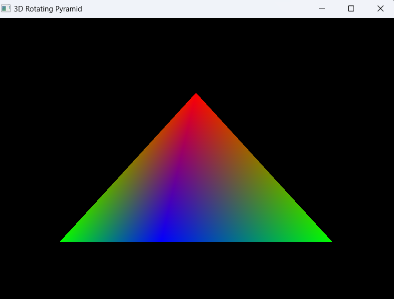

Seunghwan Lee
Welcome to my CS 499 Computer Science ePortfolio. This portfolio showcases the skills, knowledge, and technical growth I developed throughout the Computer Science program at Southern New Hampshire University.
The purpose of this ePortfolio is to demonstrate my ability to design, develop, improve, and evaluate software applications through practical projects and technical enhancements. Each enhancement included in this portfolio reflects important computer science concepts such as software engineering, algorithms and data structures, databases, graphics programming, debugging, and software refinement.
Throughout the program, I gained experience working with programming languages, software development tools, graphics libraries, and problem-solving techniques used in modern computing environments. The artifacts presented in this portfolio demonstrate both technical implementation skills and the ability to improve existing software through meaningful engineering enhancements.
The artifact selected for this enhancement was originally developed in CS-330 Computational Graphics and Visualization. The original project focused on implementing foundational graphics rendering concepts using OpenGL, including shader programs, vertex buffer objects, and geometric rendering.
The original artifact displayed simple geometric objects using basic color rendering techniques. For this enhancement, the project was expanded to include advanced lighting calculations, interactive camera controls, perspective projection, depth testing, and improved rendering architecture.

Figure 1: Final enhanced OpenGL pyramid project with lighting, transformations, and improved rendering functionality.
One major focus of this enhancement was improving the software engineering quality of the original application. The original project relied heavily on procedural rendering logic with limited modularity. During enhancement, the rendering system was reorganized into reusable components and callback functions to improve maintainability and readability.
The enhanced version also introduced more advanced graphical features using OpenGL, GLFW, GLEW, GLM, and stb_image libraries. These additions improved rendering realism while also demonstrating the ability to integrate industry-standard graphics technologies into an existing software project.
Through this enhancement process, I gained valuable experience in graphics programming, shader debugging, rendering optimization, and software refinement. One of the most important lessons learned was the importance of modular software design when building increasingly complex graphical applications.
Several technical challenges occurred during development, including lighting calculations, transformation management, camera movement, and debugging rendering behavior. Solving these issues strengthened my understanding of real-time graphics rendering and improved my debugging and problem-solving abilities.
This section will include the second enhancement artifact and reflection.
This section will include the third enhancement artifact and reflection.